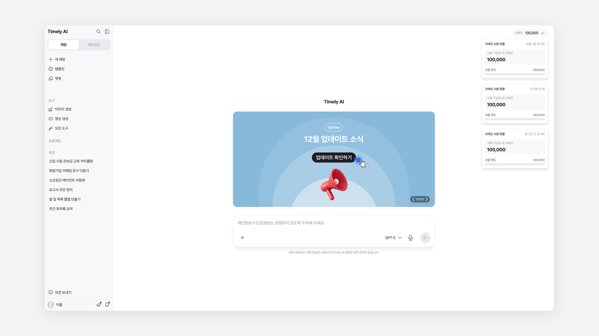
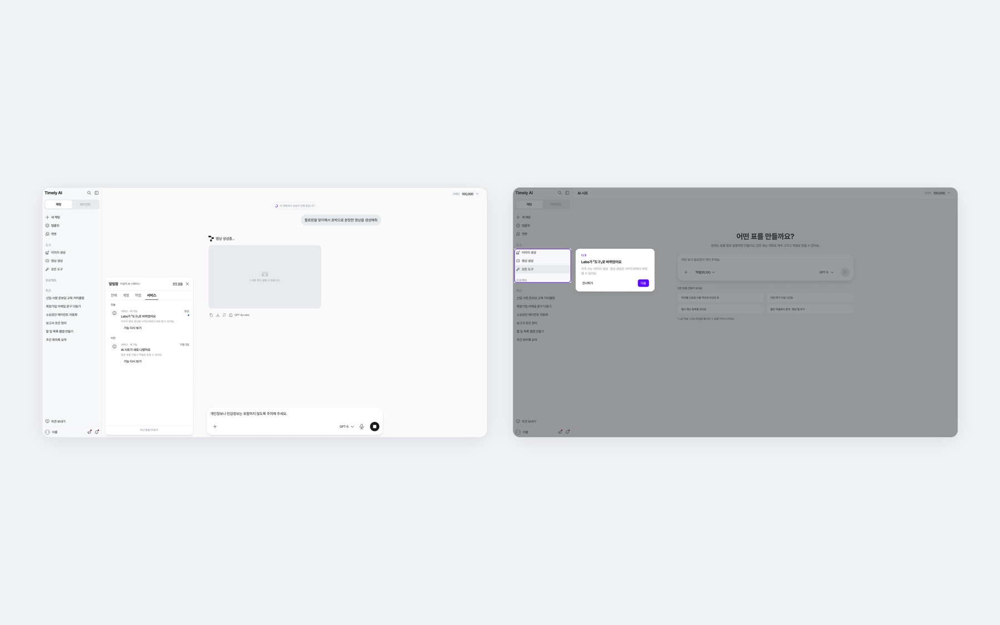
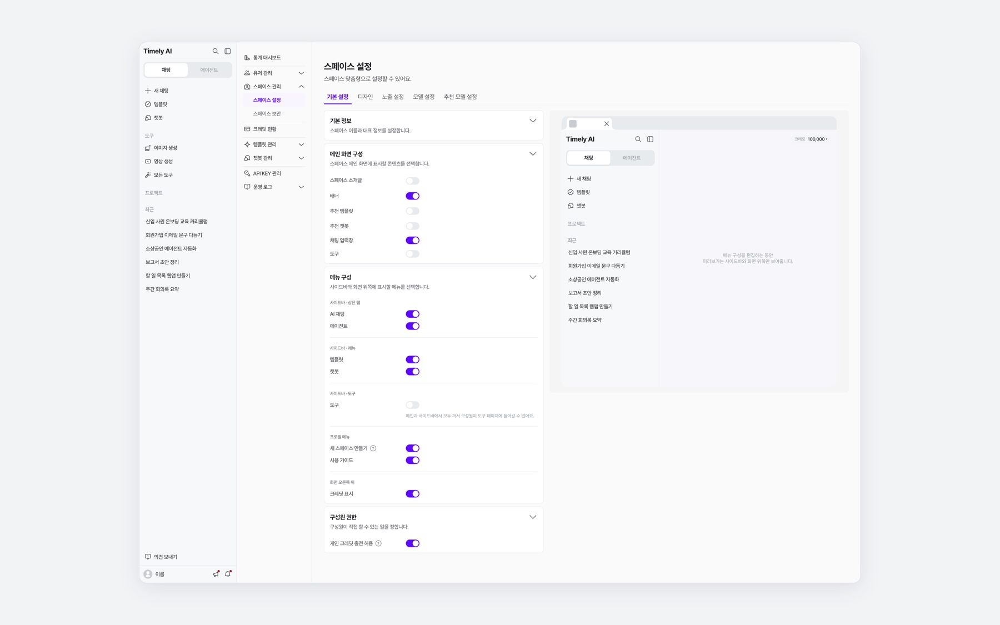

Timely AI —
AI를 처음 쓰는 사람도 헤매지 않게

overview.
타임리 AI는 여러 AI 모델을 하나의 화면에서 쓰는 플랫폼입니다. 주 사용자는 대학, 교육청, 공공기관처럼 AI에 익숙하지 않은 사람들입니다.
그래서 기능을 하나 더 설명하기보다, 처음부터 헤매지 않는 구조를 만드는 데 집중했습니다. 아래 두 가지 결정은 모두 이 원칙에서 나왔습니다.
01.
나에게 온 소식과 서비스 소식 나누기
문제
작업 완료, 크레딧 경고 같은 개인 알림과 새 기능 소식이 한곳에 섞여 있어, 중요한 알림이 묻혔습니다.
결정
종 아이콘은 “나에게 일어난 일”(작업·계정), 확성기 아이콘은 “서비스 소식”(공지사항)으로 나눴습니다. 새 기능 알림에는 [기능 다시 보기] 버튼을 달아, 누르면 해당 화면에서 안내가 다시 시작되게 했습니다.
이유
처음에는 서비스 탭을 아예 빼려 했지만, 새 기능을 놓친 사용자가 다시 배울 길이 사라진다는 문제가 있었습니다. 그래서 탭을 남기고, 알림이 “읽고 끝나는 글”이 아니라 “기능으로 가는 입구”가 되게 했습니다.

02.
설명을 늘리지 않고 줄여서 해결하기
문제
관리자 설정 화면의 툴팁이 길고 많아, 정작 중요한 경고가 눈에 띄지 않았습니다.
결정
- 화면 미리보기로 보이는 내용은 툴팁에서 뺐습니다.
- 눈에 보이지 않는 결과(예: 이미 만든 스페이스는 영향받지 않음)만 툴팁에 남겼습니다.
- 정말 위험한 조합(채팅을 시작할 곳을 모두 끄는 경우)만, 그 조합을 골랐을 때 토글 아래에 경고가 뜨게 했습니다.
이유
툴팁은 일부러 마우스를 올려야 보입니다. 모든 걸 툴팁에 넣으면 아무것도 읽히지 않습니다. 보이는 건 보여주고, 위험한 순간에만 말하는 게 관리자에게 더 친절하다고 판단했습니다.

my scope.
사내 프로덕트 디자이너로 위 화면의 설계, 시안, UX 문구를 맡았고, 개발 구현 결과를 직접 검수했습니다. 서비스 기획과 개발은 각 담당자와 협업했습니다.